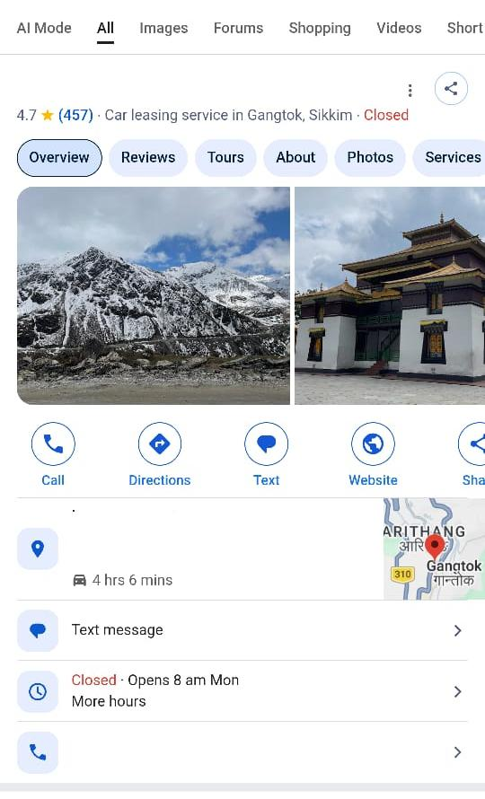

A well-established cab rental business in Gangtok also serving tour routes around Darjeeling, Nepal, Bhutan and nearby destinations depended heavily on its Business Profile for calls, directions, trust and local discovery. An accidental suspension suddenly interrupted that presence.
- Confidential cab rental and tour-package provider based in Gangtok.
- Urgent two-week project completed independently.
- Suspended Business Profile successfully restored within a few days.
- Approximately 380 existing reviews and essential business information recovered.
Project overview
A pioneering cab and tour operator based in Gangtok.
Gangtok, Darjeeling, Nepal, Bhutan and nearby routes.
Urgent recovery, verification and monitoring.
Recovery work handled without a supporting team.
The challenge: local visibility suddenly disappeared
The client’s Business Profile had been accidentally suspended. For a location-dependent travel business, the disruption affected far more than a listing: customers could lose access to reviews, calls, directions, business information and the trust signals used when choosing a cab or tour provider.
The profile held approximately 380 customer reviews at the time, making recovery especially urgent. The immediate priorities were to restore the profile, recover its review history, reverify the mobile number and confirm that essential information remained accurate.
For a local travel business, losing the Business Profile can interrupt the customer journey at the exact moment someone is ready to call, navigate or book.
The recovery approach
Assess the suspension
Reviewed the profile state and identified the information requiring recovery or reverification.
Verify business details
Reconfirmed the mobile number and other essential customer-facing information.
Restore the profile
Completed the required recovery steps and monitored the profile until visibility returned.
Check reviews and access
Confirmed that the historic review profile and important customer actions were available again.
How the project was executed
- Documented the visible disruption.
The starting condition was reviewed so that the recovery priorities could be handled in the right order.
- Reverified essential information.
The business mobile number and other important profile details were checked and verified again.
- Completed the restoration workflow.
The profile recovery was handled as an urgent task because of its direct importance to local customer acquisition.
- Verified the returned review history.
Approximately 380 existing reviews became available again after the profile was restored.
- Monitored the live customer experience.
Calls, directions, website access, operating information and public review visibility were checked after recovery.
The results
The profile was successfully restored within a few days, well inside the two-week project window. The recovery returned the business’s local presence and preserved the customer trust accumulated through its reviews.
Local visibility and customer actions became available again.
Valuable customer history and social proof were preserved.
The attached image shows the profile active with continued review growth.
Customers could again use the profile to call, request directions, visit the website and review the business before booking.
Current profile evidence

The red “Closed” label is paired with “Opens 8 am Mon” and reflects the business’s operating-hours status at the time of capture. It does not indicate that the profile remains suspended.
Key lessons from the recovery
- Treat sudden Business Profile suspension as a business-critical local SEO issue.
- Keep the business name, phone number, category and other key information accurate.
- Document profile details and ownership access before problems occur.
- Check reviews, calls, directions, website links and hours after restoration.
- Monitor the profile after recovery for further verification requests or inconsistencies.
Frequent or inconsistent edits to important business information can create verification problems. Major changes should be accurate, documented and made carefully.
Frequently asked questions
What was the main problem in this project?
The client’s Business Profile had been accidentally suspended, disrupting local visibility, reviews and customer access.
How quickly was the profile restored?
The profile was successfully restored within a few days during a two-week project window.
Were the existing reviews recovered?
Yes. Approximately 380 existing reviews were restored. The attached current snapshot displays 457 reviews.
What information was reverified?
The business mobile number and other essential profile information were reverified during the recovery.